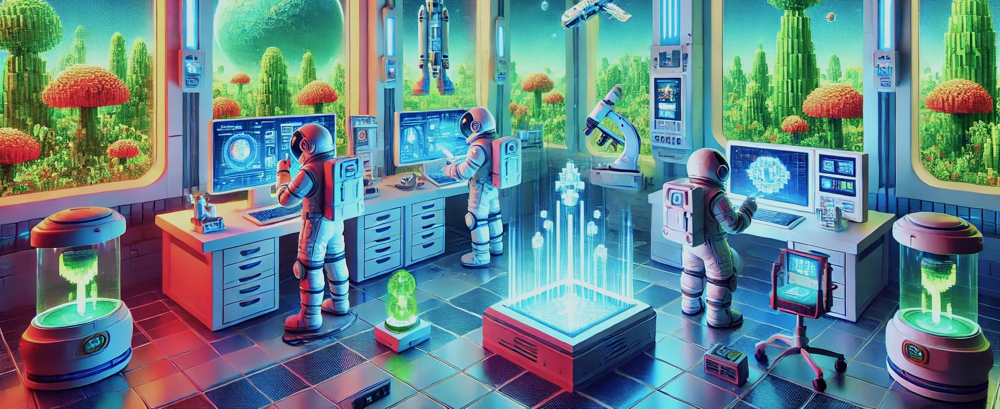

In Nomadica, humanity is a young, hopeful species, just beginning its journey among the stars. United by a shared dream of discovery, they leave their cradle planet behind—not out of necessity, but out of wonder and curiosity. The cosmos is a vast tapestry of mystery, filled with uncharted worlds, shimmering nebulae, and ancient whispers of civilizations long past. Every star holds the promise of connection, every planet a chance to grow, and every journey a story waiting to unfold. In this universe, humanity is small, but its spirit is boundless.
"Explore, discover, and relax—this game turns the vastness of space into your personal playground."
- Bowl of milk, Dungeon Gamer
"Immersive gameplay and stunning visuals make every journey through the stars feel like a work of art."
- Anna Banana, Polygamer
"Every corner of the universe is a visual masterpiece, with gameplay that invites you to stay for hours."
- Slippery Floor, Komaki
"A perfect blend of serene exploration and beautiful, handcrafted worlds that will leave you in awe."
- WaterBottle V2, Zanzabaria
In this vast, uncharted universe, the only limit is the horizon, and every new star offers the promise of discovery at your own pace. Drift through nebulae, explore ancient planets, and uncover secrets hidden in the quiet corners of space, all while surrounded by the calming hum of your ship's systems. There's no rush here, just the gentle comfort of endless exploration, where each world feels like a cozy new home. Whether you're observing distant galaxies or simply stargazing from your ship's window, you're free to wander the cosmos at your leisure, embracing the serene beauty of the unknown.
Every corner of the galaxy is brought to life with stunning hand-crafted visuals, from the soft glow of distant stars to the intricate details of alien landscapes. Each planet, asteroid, and nebula is meticulously designed, creating a world that feels as if it could be a piece of living art. The subtle textures and rich colors evoke a sense of wonder and tranquility, inviting you to immerse yourself in the beauty of the cosmos. It's a universe where every frame feels like a masterpiece, offering a uniquely personal and breathtaking visual experience.
Whether you choose to venture into the stars alone or with friends, the universe is yours to explore at your own pace. Embark on solitary journeys through the unknown, finding peace in the quiet expanses of space, or team up with others to share in the thrill of discovery and adventure. Together, you can uncover hidden planets, trade stories, and create your own legacy in the stars. No matter how you choose to explore, the cosmos offers endless possibilities for connection, collaboration, and personal freedom.
In this indie space exploration game, every decision charts the course of your unique journey through a vast, uncharted galaxy. Will you align with alien civilizations to build interstellar alliances or exploit scarce resources for personal gain? Each planet hides secrets, each choice shapes your legacy, and the stars are both a guide and a challenge. The adventure is yours to craft—boldly wander, survive, and leave your mark on the cosmos.